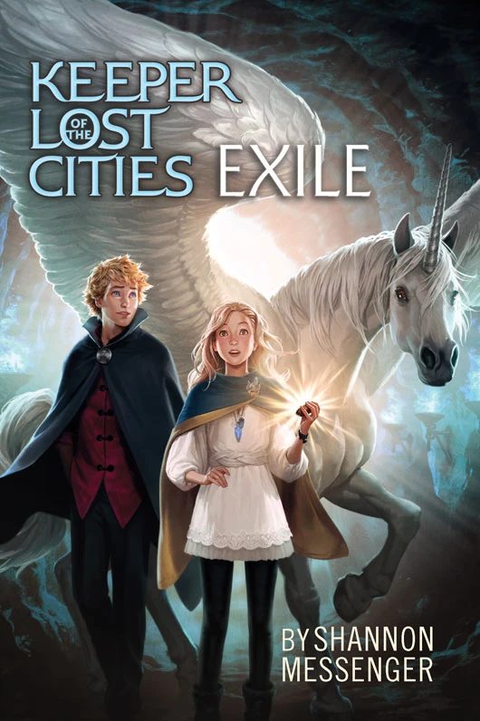
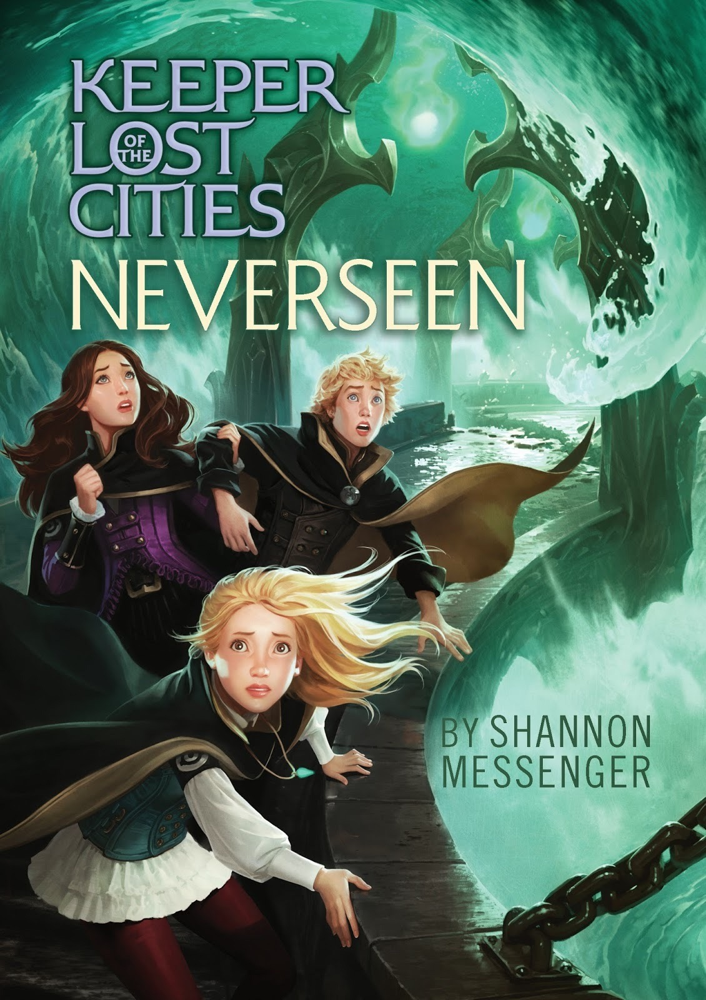
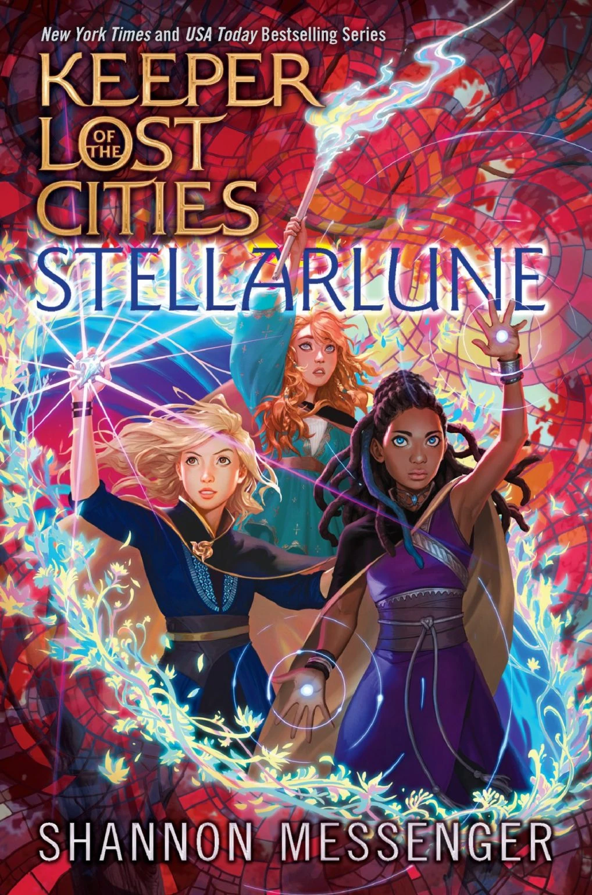
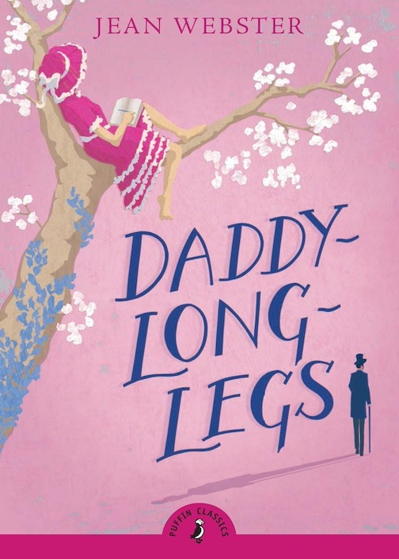
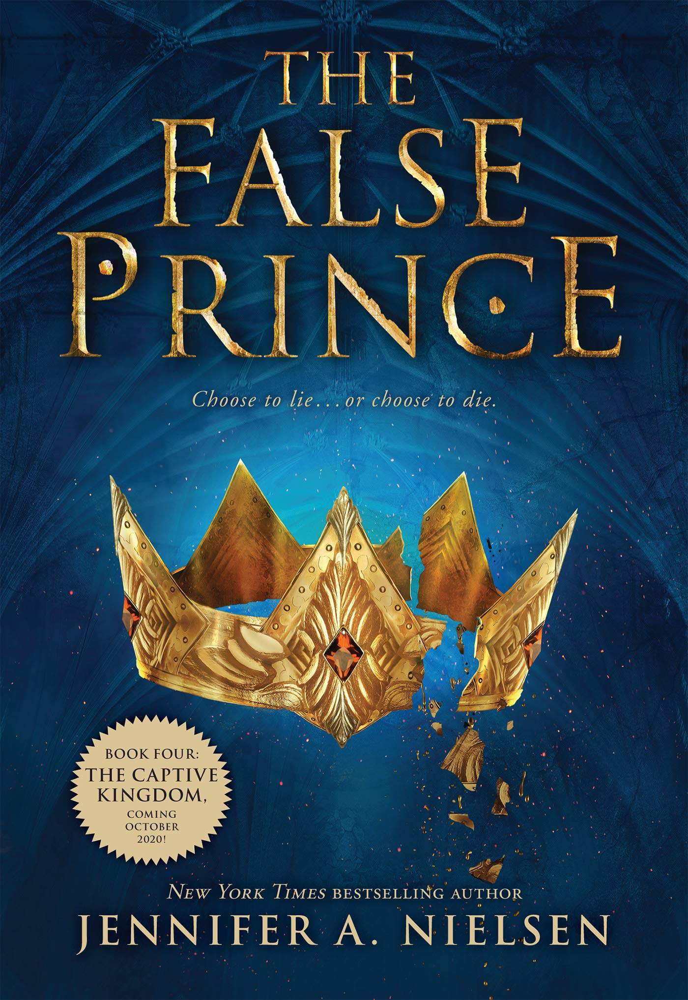

Books

Exile
Shannon Messenger
Sophie Foster thought she was safe. Settled into her home at Havenfield...

Neverseen
Shannon Messenger
Sophie Foster is on the run—but at least she's not alone...

Stellarlune
Shannon Messenger
Sophie Foster changed the game...

Daddy Long Legs
Jean Webster
Daddy Long-Legs is a 1912 epistolary novel by the American...

Chronicles of Narnia
C.S. Lewis
Journeys to the end of the world, fantastic creatures, and epic...

The False Prince
Jennifer Nielsen
In a discontent kingdom, civil war is brewing. To unify the divided...